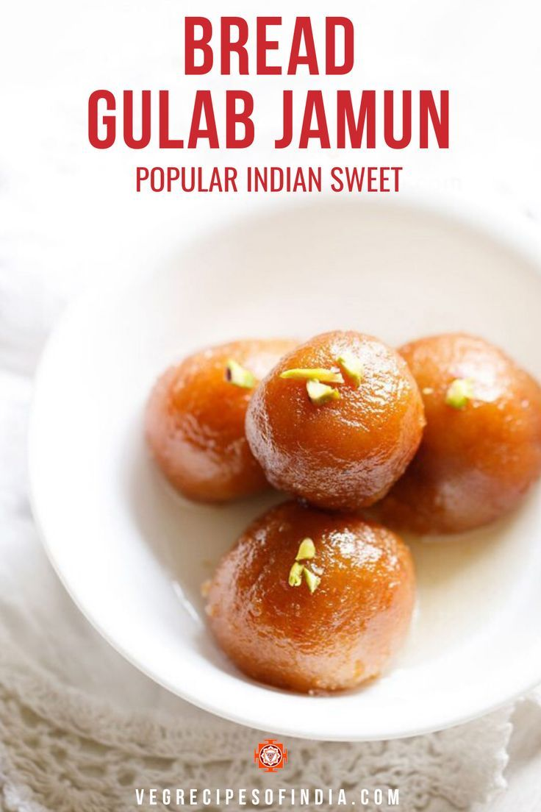
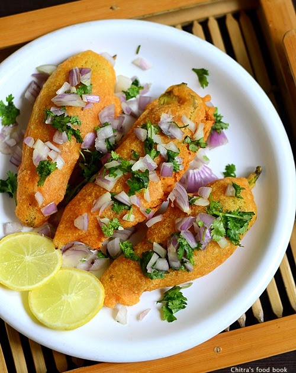
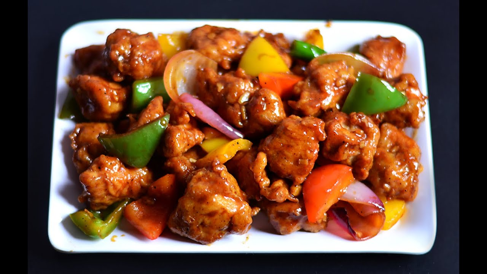

Gulam Jamun
Ingredients
- Gulab Jamun mix
- Sugar
- Milk
- Oil & Ghee
Recipe
- Prepare Gulab Jamun Balls.
- Shape into Balls.
- Heat Ghee or Oil
- Fry the Gulab Jamun
- Prepare Sugar Syrup
- Soak the Gulab Jamun
- ServeGarnish with chopped nuts if desired

Mysore Pak
Ingredients
- Sugar
- gram flour
- ghee
- Baking soda
Recipe
- Heat a pan and add besan to it.
- Once the ghee and besan are well combined, it's time to prepare the sugar syrup.
- After adding the sugar syrup, continue cooking the mixture on low heat.
- Once the mixture is thickened and well-cooked, quickly transfer it to a greased tray .

Mirchi Bajji
Ingredients
- green chilies
- chopped onions
- Oil
- gram flour
- turmeric,Red chilli powder
- Oil
- Salt
Recipe
- Slit the green chilies lengthwise, keeping them whole with the stems..
- In a bowl,chopped onions, red chili powder, and salt. Stuff each chili with this mixture..
- In a mixing bowl, combine gram flour,turmeric powder, salt. Gradually add water to make a thick, smooth batter without lumps..
- Heat oil in a deep frying pan over medium heat.
- Remove the fried Mirchi Bajjis using a slotted spoon
- Serve Mirchi Bajji hot

Chilli Chicken
Ingredients
- boneless chicken
- chili sauce
- ginger-garlic paste
- Salt and pepper to taste
- cornflour
- Oil
Recipe
- Marinating Chicken with soy sauce, chili sauce, ginger-garlic paste, salt, and pepper,add cornflour.
- Heat oil in a pan or wok for deep frying.
- In a separate pan, preparing the sause.
- Combining Chicken and Sauce.
- Garnish with chopped spring onions.
